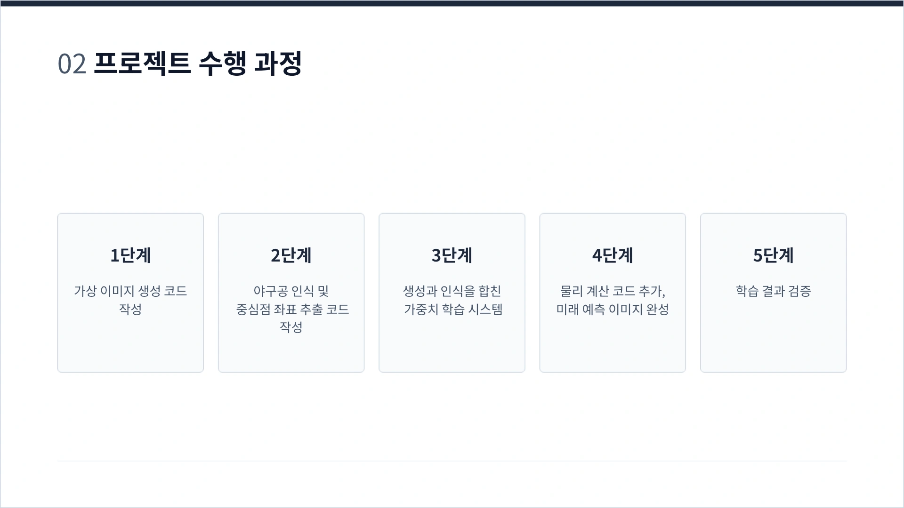
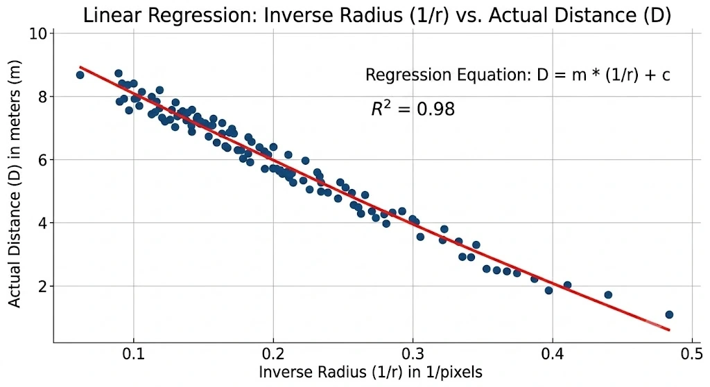

PROJECT 12 / 컴퓨터 비전 · 물리 모델링PROJECT 12 / Computer Vision · Physics Modeling
이미지 기반 투사체 측정 및 미래 궤적 예측Image-Based Projectile Measurement and Future Trajectory Prediction
연속된 세 장의 이미지에서 공의 위치를 찾고, 거리 추정과 운동 방정식으로 미래 프레임을 생성합니다.Locates the ball in three consecutive images and generates future frames using distance estimation and equations of motion.
01 문제 상황 Problem
공의 속도와 궤적 분석에 쓰이는 특수 장비 대신, 일반 이미지로 투사체의 움직임을 추정할 수 있는지 탐구했습니다. 화면의 픽셀 위치·크기를 물리 좌표로 바꾸고 미래 위치까지 연결하는 경량 엔진이 목표입니다.Explored whether projectile motion can be estimated from ordinary images instead of the specialized equipment used for ball speed and trajectory analysis. The goal is a lightweight engine that converts on-screen pixel positions and sizes into physical coordinates and extends them to future positions.
02 사용 모델과 데이터 Models and Data
모델·기술Models · Techniques
- OpenCV와 KMeans: 이진화한 이미지에서 잡음과 공을 구분하고 중심 좌표를 추정합니다.OpenCV and KMeans: separate the ball from noise in a binarized image and estimate its center coordinates.
- scikit-learn 선형 회귀: 공의 반지름 역수와 거리의 관계를 보정합니다. 이후 계산에는 NumPy와 고전역학의 운동 방정식을 사용합니다.scikit-learn linear regression: calibrates the relationship between the inverse of the ball's radius and its distance. Subsequent calculations use NumPy and the equations of motion from classical mechanics.
데이터·입력Data · Inputs
- 지름 7.3cm의 공과 중력 조건을 설정한 시뮬레이션에서 생성한 연속 3프레임.Three consecutive frames generated in a simulation with a 7.3 cm ball and a set gravity condition.
- 카메라 거리별 공의 픽셀 크기와 좌표에 백색 잡음을 추가한 가상 데이터 및 별도로 입력한 테스트 프레임.Synthetic data of the ball's pixel size and coordinates at various camera distances with added white noise, plus separately supplied test frames.
03 구현 과정 Implementation
- 가상 이미지로 거리 추정 가중치를 학습하고 저장합니다.Distance-estimation weights are trained on synthetic images and saved.
- 세 프레임에서 공의 중심과 반지름을 추출해 실제 좌표로 환산한 뒤 속도와 가속도를 역산합니다.The ball's center and radius are extracted from three frames, converted to real-world coordinates, and then velocity and acceleration are computed backward.
- 마지막 프레임에서 0.1·0.2·0.3초 뒤의 위치와 크기를 계산해 새로운 이미지로 출력합니다.Calculates the position and size 0.1, 0.2, and 0.3 seconds after the last frame and outputs them as new images.

04 핵심 결과 Key Results
- 데이터 생성, 객체 위치 추출, 거리 보정, 물리 계산, 미래 프레임 출력을 하나의 파이프라인으로 구현했습니다.Implemented data generation, object localization, distance correction, physics computation, and future frame output as a single pipeline.
- 초기 가중치를 의도적으로 낮춘 후 시뮬레이션의 기준값에 가까워지는지 확인하고, 출력 프레임의 연속성을 시각적으로 검토했습니다.After deliberately lowering the initial weights, the team checked whether results approached the simulation's reference values and visually reviewed the continuity of output frames.

05 한계와 발전 방향 Limitations and Next Steps
- 검증은 주로 가상 데이터에 기반하며 실제 스포츠 촬영에서의 위치 오차·속도 오차는 보고되지 않았습니다.Validation was based mainly on synthetic data; position and velocity errors on real sports footage were not reported.
- 회전, 공기 저항, 렌즈 왜곡 등 다양한 현실 조건은 충분히 다루지 못했습니다. 발표자료의 그래프는 구현 설명용 예시로 구분합니다.Various real-world conditions such as spin, air resistance, and lens distortion were not sufficiently addressed. The graphs in the presentation slides are treated as illustrative examples of the implementation.
자료: 최종보고서 및 발표자료. 제출 자료를 바탕으로 정리했으며, 결과는 해당 프로젝트의 구현·실험 범위에 해당합니다.Source: final report and presentation slides. Summarized from the submitted materials; results reflect the scope of the project's implementation and experiments.